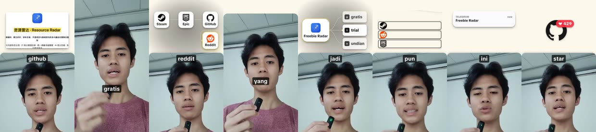
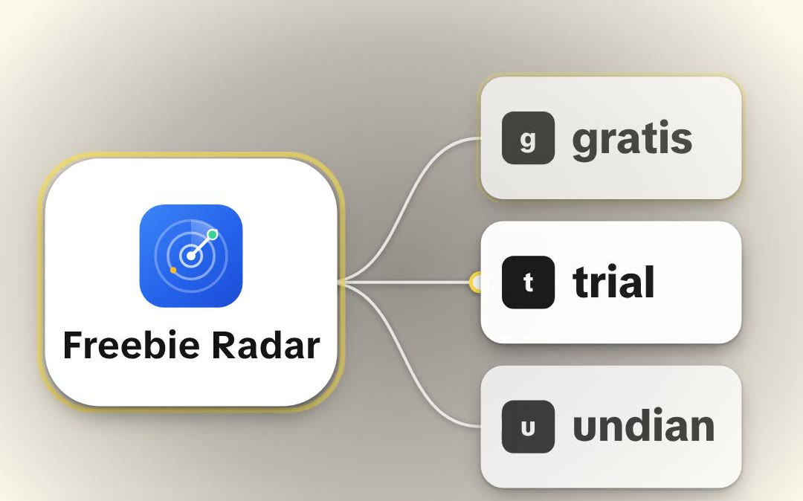

The real page
The page, marked at the line
Name a product and it captures that page, then marks the exact line it is talking about.
Early access · for talking-head creators
Send one long take. kembar removes the retakes, cuts to the word, captions it one word at a time, and puts the real page on screen the second you name it.
 The take
The take

The editHow it works
You see each decision before it happens, and you can send any of them back.
One long recording, retakes and all. It finds the false starts and the dead air first, then shows you every word it removed.
One creator or several. It measures pace, caption rhythm, where a card sits and how a zoom lands. Abstract traits only, never their clips, their voice or their branding.
The caption plan and the cards land on the words you said. You approve the stills, then the render.
What comes back
Nothing here is a template and nothing is stock. Each card is built for the sentence under it.
Name a product and it captures that page, then marks the exact line it is talking about.

A split becomes a split, a list becomes a list, and each piece lands on the word that asked for it.

Say a figure and it counts to it on screen, in the same take, with no second recording.
Captions run one word at a time and cut at the phrase, so nothing breaks in the middle of an idea.
What we do differently
Every removed word is listed. If a cut is wrong, you put it back.
The stills come first. Nothing renders until you say yes to them.
Say what is wrong and only that part changes. The rest of the edit stays exactly as it was.
What you approve in review is exactly what you download.
You do not need a studio, a timeline or a second camera. One take and a handful of edits you like is the whole input. Early access opens in small groups.
Questions
No. It measures abstract traits: pace, caption rhythm, where a card sits, how a zoom lands. It never uses their clips, their voice, their music or their branding.
One long take and 3–6 videos you like. That is the whole input.
Say which one. Only that card changes, and the rest of the edit stays as it was.
Yes. Indonesian and English, captions included.
In small groups. We will not promise a date until we can keep it.
Early access
One email to confirm, one when your group opens. We will not promise a date until there is one.
We use your address only to tell you when it opens, and nothing else. Unsubscribe any time.